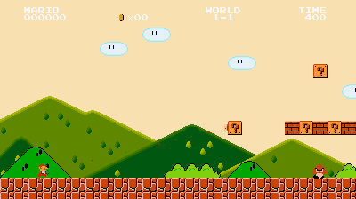
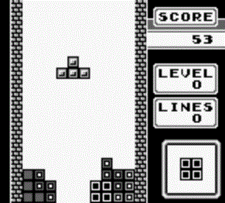
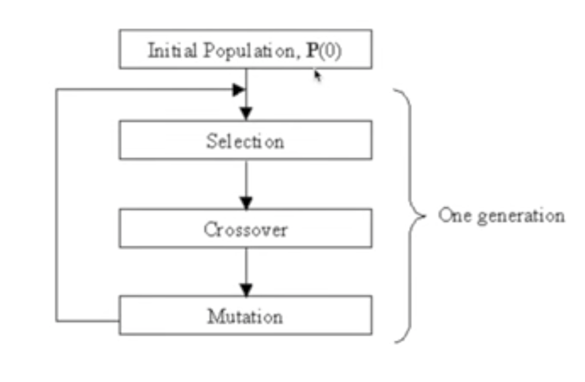

There is so much happening in the world of AI right now, that even an experienced software engineer would still need about 6-8 months training to get up to speed. No doubt of heard of the terms Neural Networks and machine learning or LTSMs, SVMs, recurrent & feedforward networks if you are a bit more involved. That said, almost all neural networks today (which are a sub set of machine learning systems modelled on the brain) ultimately rely on the same core principles. That is they are directed somehow to achieve a desired outcome, be it feed forward with hidden layers or recursive error corrective approaches.
As ‘exciting’ as that sounds, in this blog we will discuss a different one which is the dark horse of the pack - The Evolutional Neural Network. As suggested in the name, Evolutional Neural Networks (ENNs) follow a process of natural selection and are subject to a degree of randomness as well as other features that we see in nature. About 30 years ago, ENNs or Genetic Neural Networks came onto the scene. For 25 years it hadn’t made much of an impact and there was little to no real utility in the mainstream. However just recently about 4 or 5 years ago with the increase of computational power and the introduction of neural network libraries like tenor flow - genetic NNs have risen from the flames. Now we are seeing widespread adoption of ENNs in startups, big corporations and research where scientists are looking for new ways to find optimal solutions to complex problems.

In this hybrid blog/tutorial we are going to walk through all the key features of ENNs by looking at code (provided here) that has been popular amongst A.I machine learning scientists. It is a genetic algorithm embedded with a javascript Tetris game, and applies an evolutional (survival of the fittest) approach to playing the game. By allowing nature to take its course over hundreds of generations (game session), complexity arises and the A.I starts to make increasingly efficient selections. The code in total is 1000 lines of javascript, which I will provide (including links to the original author of the code) and we will be coding the first100 lines This constitutes the highest level approach, the initialisation function all the helper methods. We will see exactly what the high level architecture is then we will talk about the helper functions. But ultimately will cover all 1000 lines of code.
HOW EVOLUTIONAL MODELS WORK
The terms evolutionary and genetic are used interchangeably, e.g. a genetic algorithm - they are the same thing. There are three parts to a evolutionary/genetic algorithm
1 - Selection
We create a population of genomes (sometimes called chromosomes) they can be anything, but ultimately they are some kind of entity you want to improve over time.
Say for example you want to create a 3D simulation and we wanted to create a bipedal robot, we would have a bunch of spiders or quadrupeds. They would be our genomes, they would then breed and the idea is each genome has multiple genes (parameters) then we use a fitness function to select what the best ones are. We can decide what these fitness functions are, such as who can walk past 2 meters - congratulations you get to breed. Essentially we SELECT who is fit to breed.
2 - Crossover
Now we come to the reproduction (the fittest ones get to make babies here) reproduction can mean many things. In this case we have some sort of merging combination that is analogous to reproduction so for example we may take two spiders that are fittest, we find a way to convert their stats to a scalar, multiply together and then we get some output scalar. Now we revert it back to a 3D spider. This is entirely application dependent. So they will create offspring.
3 - mutation
Now after the fittest have bred, we randomly edit the genes, or parameters in some way so we hope to create beneficial features in the future. This could be simply multiplying the scaler by a random number.
The resulting flow looks like this.

The idea is to replicated Darwinian evolution, and just like in DE we have a population, they breed and only the fittest survives. The fittest then get to mate, and their offspring will have their genes (forcibly) mutated so that there is an element of change which can hopefully result in positive features over time in the environment. So in a nutshell we initialise a population, then perform a selection and we breed them finally we apply a mutation.
THE GOOD THE BAD AND THE DARWIN AWARD
So why don’t we use this more often? First lets understand how normal neural networks work. A conventional neural net will use a process known as backwards propagation to error correct. We take some input data then we propagate it through each layer, then we have an output value and compare with expected value (the difference between the two) - this is our error value and we use that to calculate the partial derivative with respect to each layer going backwards and then multiply by our weights to update our network.
So instead of that we evolve the weights (genomes) by selection and mutation (instead of using the derivative approach). At present backwards propagation is still the best approach, but evolutionary algorithms are promising and they have been around since the 80s. For example open A.I have released a paper on evolution strategies as a scalable alternative to reinforcement learning. Another good use case is neuro-evolution used in games, it is a neural network optimised for a certain objective and it doesn’t stop there.
Conventional neural networks that use gradient decent (backwards propagatio) sometimes doesn’t always converge to the global minima, it converges to the local minima. If we consider the optimisation options as a bendy curve, conventional methods will find the local minima instead of the global minima (so not the actual lowest point i.e. the best cost). This is where NeuroEvolution can be beat by evolutionary algorithms.
They are also able to discover and work on entire neural networks, instead of hyper parameters (previous network state). If we consider a neural network zoo (a bunch of networks), one used for binary data another scalar data and so so that we may have 10 or more different choices, this can present a huge problem figuring out which NN to apply and when. What if we could learn what NNs would be optimal for a certain use case, THIS is where genetic algorithms are most appropriate because standard backward propagation NNs are not configurable for this. Evolutionary algorithms can optimise for the entire type.
Adam McMurchie 26/May/2017